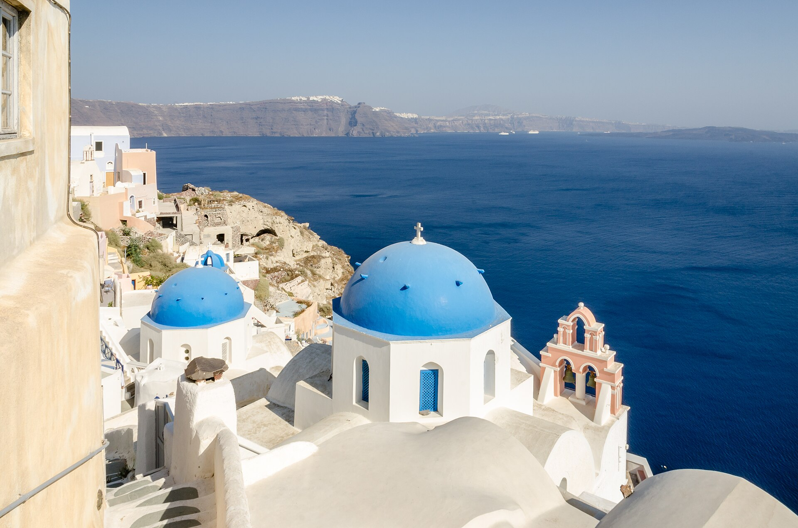
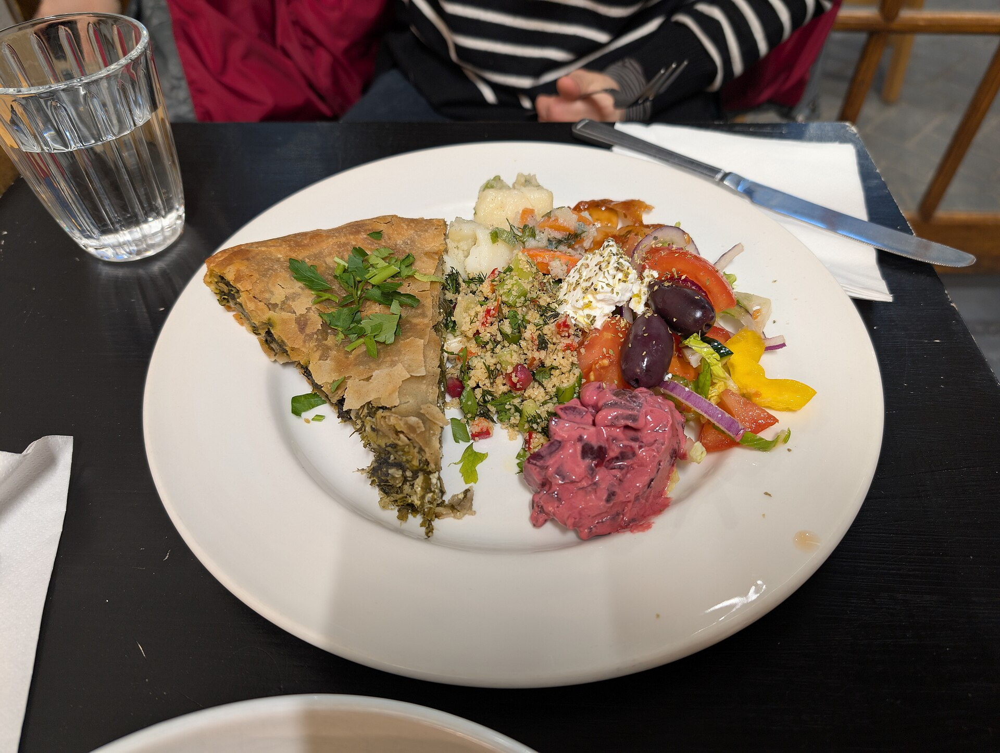
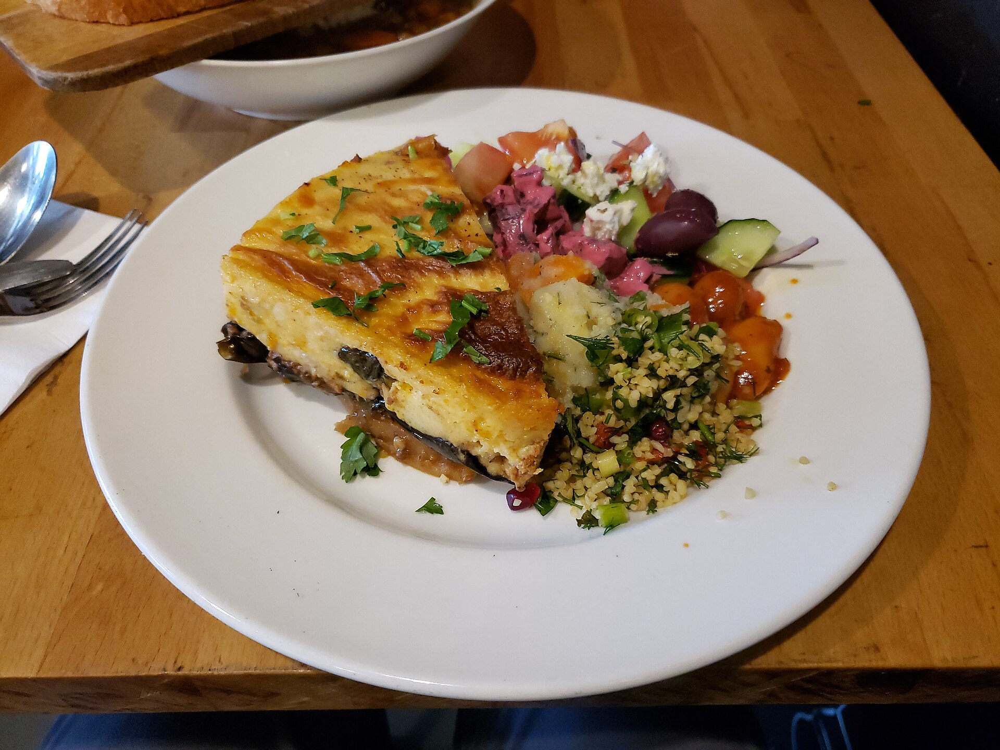
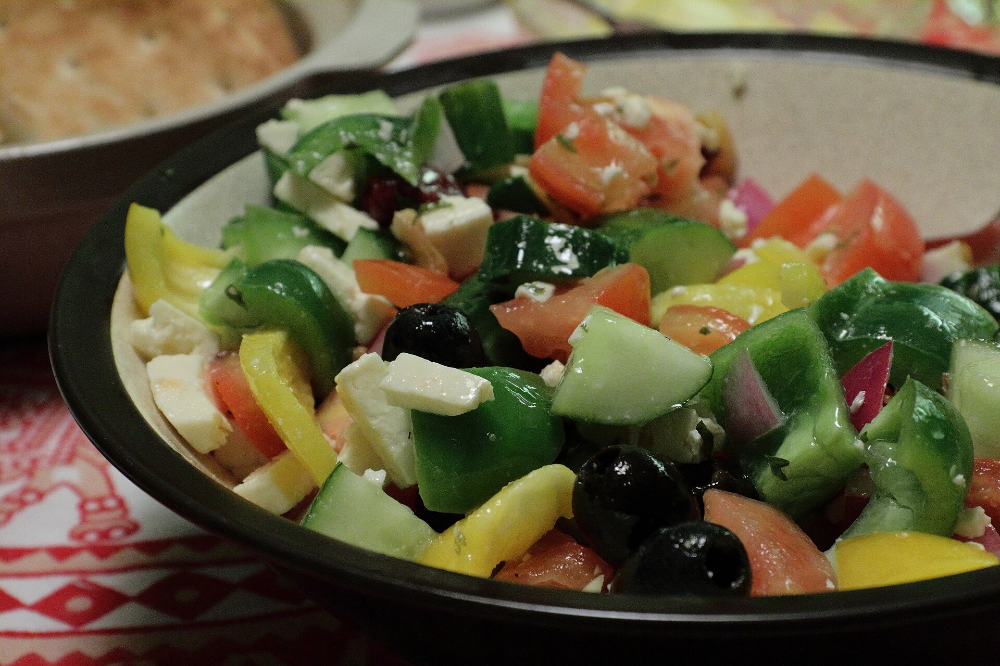

Crete
Olive oil, dakos, and hearty mountain flavors.

From Chicago kitchens to the Greek islands — family recipes, stories, and a lot of olive oil. Born in the South Side, rooted in Crete, Santorini, Corfu and beyond.
Each recipe here was handwritten, tested, and loved in Helen's kitchen on the South Side of Chicago. Made with simple ingredients, a lot of olive oil, and always with family around the table.
Yiayia's parents spoke of blue seas, whitewashed villages, and the scent of oregano on the wind. We honor those memories.
Olive oil, dakos, and hearty mountain flavors.
Fava, cherry tomatoes, and sea breezes.
Pastitsada and citrus bright dishes.
Sweet loukoumi and spiced meats.
Three favorites from the family cookbook — each one carries a story from Yiayia's kitchen.

Sunday mornings, phyllo on the counter, Yiayia humming while rolling. Spinach, feta, and green onions wrapped in crisp golden phyllo.
Read the recipe →
Yiayia's father's favorite. Layers of eggplant, potatoes, and rich béchamel, baked until golden and comforting.
Read the recipe →
No lettuce — just tomatoes, cucumbers, olives and feta. The island way. Drizzled with olive oil and oregano.
Read the recipe →